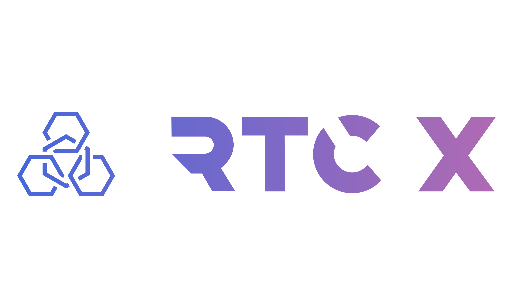

RTC X bridges deep, high-leverage perpetual markets with institutional-grade Real-World Assets. Trade commodity-backed derivatives and capture non-correlated reinsurance yields—all powered by ironclad infrastructure.